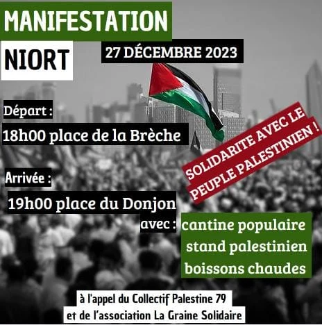

Appel relayé
À Niort, l’appel à la manifestation du 27 décembre pour la Palestine
Date indiquée par Facebook · 22 décembre 2023
Repères éditoriaux
L’affiche annonce un départ à 18 h place de la Brèche et une arrivée à 19 h place du Donjon. Les photos publiées le 27 décembre reviennent sur la marche.
Texte conservé avec la publication
Mercredi 27 décembre,
Restons mobilisés !
Soyons de plus en plus nombreux !
18h00, rassemblement Place de La Brèche à Niort
pour exiger un cessez-le-feu immédiat et durable à Gaza
18h15, départ pour une marche Rue Ricard, Rue Victor Hugo
avec plusieurs arrêts pour prises de parole
19h00, arrivée Place du Donjon avec :
cantine populaire
stand de produits palestiniens
boissons chaudes (vin chaud, jus de pomme...)

Sources
Archive rouge · export Facebook · AR-0002-FB-01513
À lire aussi · Niort, le 27 décembre. Nous avons défilé en solidarité avec le peuple palestinien